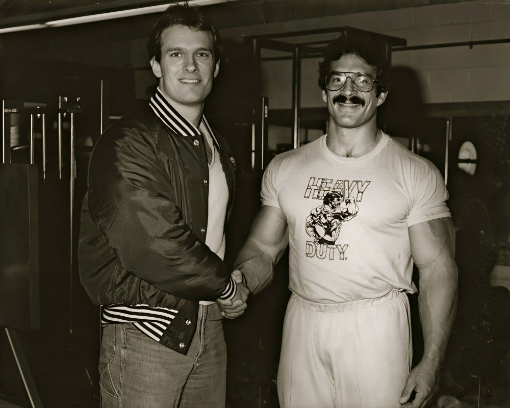
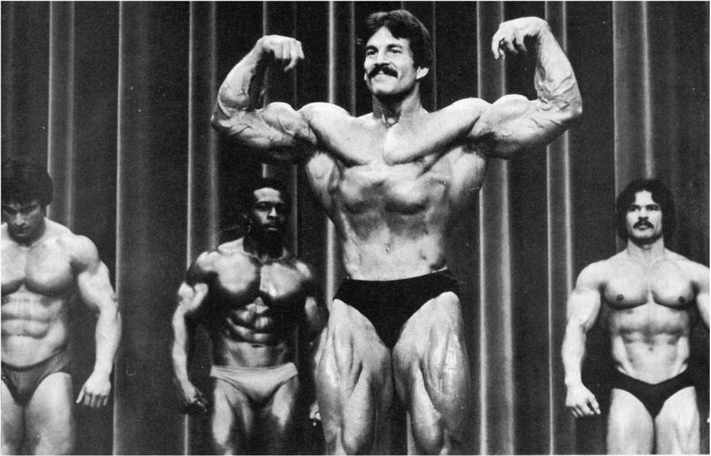

MIKE
MENTZER
THE MATHEMATICIAN
A revolutionary bodybuilder who approached training as a precise equation of intensity, recovery, and logic.
1979
SCROLL TO READ
A revolutionary bodybuilder who approached training as a precise equation of intensity, recovery, and logic.
Mike Mentzer (1951–2001) was a major and controversial figure in bodybuilding.
An American professional bodybuilder, he stood out as much for his massive, symmetrical physique as for his analytical mind.
Rejecting the dogmas of traditional training, he developed the Heavy Duty method, based on maximum intensity and scientific logic.
"In a sport driven by instinct, he brought cold calculation"

Training is a science. Muscle growth is mathematics.
The nickname "The Mathematician" was no coincidence. Mike Mentzer approached training like an equation: stimulation + recovery = growth.
He rejected the idea that "more is better" and instead focused on measurable, logical, and quantifiable progress. Training loads, tempo, and frequency were all calculated and optimized.
In a world driven by ego and instinct, Mentzer introduced a cold, rational, almost philosophical vision of muscle building.
Mike Mentzer radically changed the rules of bodybuilding with his Heavy Duty training method. At a time when long, high-volume workouts were the norm, he claimed that muscles do not respond to volume, but to true intensity.
His principle was simple: very few sets, often only one per exercise, taken to absolute muscular failure. Every repetition had to be controlled, every workout carefully planned.
For Mentzer, training too often was the fastest way to stop progressing.

Above all, the body needed long recovery periods, sometimes lasting several days. The Heavy Duty method was about quality over quantity, intelligence over tradition.
Mike Mentzer's physique was unique for his time: thick, dense, and impressively balanced. In 1979, he achieved a perfect score at the Mr. Olympia, a rare moment in bodybuilding history.
Yet just one year later, he abruptly retired from competition, openly criticizing biased judging and an industry driven more by politics than performance.
This decision strengthened his image as an outsider, unwilling to conform to the unspoken rules of professional bodybuilding.
"I'd rather be right than popular."
Mike Mentzer's influence goes far beyond the stage. His books, writings, and outspoken ideas continue to fuel debates about optimal training.
In an era of overtraining and excess, his message remains strikingly relevant: less, but better.
Mind, Discipline, and Isolation

Mike Mentzer was not just building muscle - he was building a system of thought. Highly disciplined and deeply introspective, he often stood apart from the bodybuilding mainstream.
His refusal to compromise, whether in training or in life, led to both admiration and isolation. Mentzer believed that self-mastery required honesty, structure, and intellectual rigor.
Behind the mass and intensity was a man driven by logic, principle, and an uncompromising pursuit of truth even when it came at a personal cost.
Logic-driven approach to training
Rejected tradition for proven methods
Mike Mentzer never chased approval.
He chased coherence, truth, and results.
In a sport built on excess, he chose restraint.
In a world driven by noise, he trusted logic.
More than a champion, Mentzer remains a reminder: progress is not about doing more - it's about doing what actually works.